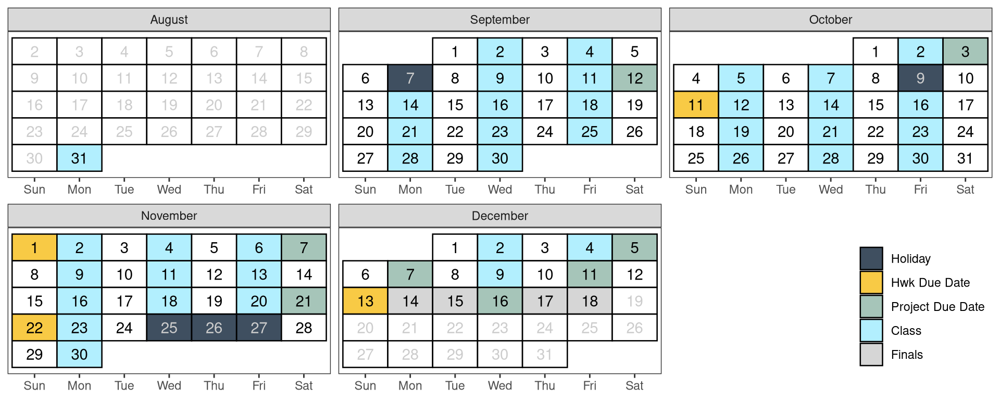

Stat 1080 Syllabus
- Instructor
- Dr. Susan Vanderplas TBD ,
- Office
- Ray B. West 412 ,
- susan.vanderplas@usu.edu TBD
- Time
- MWF 12:30-1:20
- Location
- ELSC 053
- Final Exam
- Dec 16, 12:30-2:20
…the time may not be very remote when it will be understood that for complete initiation as an efficient citizen … it is as necessary to be able to compute, to think in averages and maxima and minima, as it is now to be able to read and write.
– H.G. Wells, Mankind in the Making
Critical Information
Textbooks are free/open/online
- Introduction to Data Science 1, by Rafael A. Irizarry (IDS 1)
- Introduction to Data Science 2, by Rafael A. Irizarry (IDS 2)
- Statistical Computing in R and Python (SC).
Course Fee (Section 3.3): $30, supports Aggie Math Learning Center. Make use of it!
Required Equipment & Software (Section 1.3):
- A device with a keyboard and a screen resolution of > 1000x1000 pixels that:
- Can run R (https://r-project.org, version >= 4.5.0) and RStudio
- (OR) Can access the web RStudio platform in a browser.
- Software packages which are up to date as of the beginning of the semester.
Policy Summary (Section 3):
- Grade: 20% Attendance, 20% Preparation & Participation, 20% Personal Data Project, 40% Homework and Labs (Section 3.1).
- Attendance matters. Everyone gets three excuse-free absences (Section 3.6.1).
- Prepare: Reading (and reading quiz) must be done before class. (Section 3.7)
- Keep up with the work as assigned (Section 3.8).
- Communicate early and often (Section 3.2), especially if you’re having trouble.
- Include the right details (Section 3.2.2) when asking for help.
- AI use must be disclosed and the full transcript (prompts and responses) provided with your submission. Be prepared to explain your thought process via oral exam (Section 3.13).
1 Course Description
We live in a world with unprecedented access to information. Every day, our phones, computers, and “smart” devices collect mountains of data that are analyzed to inform and influence our choices, improve our health, and automate daily services. It is imperative that we understand how information is collected, visualized, and analyzed to shape our world. By learning about the life cycle of data, we can ensure that data is analyzed in productive and ethical ways.
This course provides your first introduction to data science. It assumes no prior experience. An introduction to data science requires learning key tools and principles from mathematics, statistics, and computer science. This course touches on all three.
1.1 Objectives
After taking this class, students should be able to:
Whether you see yourself as a future statistician, programmer, or simply want to make sense of the data-driven world around you, this course will give you tools to ask better questions, make informed decisions, and see the world in a new way.
1.2 IDEA Objectives
The university uses IDEA learning objectives to measure course effectiveness. The most relevant for this course are:
1.3 Required Software & Equipment
This course will teach you how to program using the R statistical programming language. R is a free and open-source language: a large community of people contribute to R without pay, and a larger community of people use R without having to pay for it. The language is particularly good at data wrangling and data visualization. In addition, the community has developed a large number of extra packages to augment the language, making it easy to read in, visualize, and model new and different types of data.
Some of these packages also allow you to run other programming languages, such as Python, within R. This makes R a good platform to begin to learn programming essentials in a software actively used by professionals in the workforce. Of course, R is not the only option – others, like Python, Tableau, SAS, and Julia also exist.
You must have a computing device with a large (> 1000x1000 pixel) screen and a separate keyboard (e.g. not an on-screen keyboard). Your device should either be
- A laptop with:
- a current version of R (4.5.0 or later) installed
- RStudio (2026.1.0 or later) installed
- Quarto (1.10.0 or later) installed
- Updated versions of all software packages (as of the first week of class)
- A chromebook or large tablet with a keyboard that can access the browser-based version of RStudio provided by USU. Access is free for the first 25 compute hours. However, if your compute hours exceed the free allotment, you may need to upgrade to a student account for $5/month. I recommend waiting to upgrade your account until you absolutely have to.
It will not be feasible to complete the programming assignments in this class on your phone.
If your equipment breaks unexpectedly during the semester, contact the IT service desk for help. Loaner laptops may be available for short or long term use; you can then use the chromebook/tablet instructions to access RStudio in a browser until your device is fixed.
2 Tentative Schedule
This schedule is tentative and subject to change as the semester progresses.
| Week | Topic | Important Dates |
|---|---|---|
| 1 | Introduction | |
| 2 | Programming and RStudio | Project Proposal (09-12) |
| 3 | Correlation is not Causation | |
| 4 | Programming in R | |
| 5 | The Tidyverse | Project Check-In 1 (10-03) |
| 6 | Dates, Times, and Distributions | |
| 7 | Data Visualization | Homework 1 due (10-11) |
| 8 | Statistics and Probability | |
| 9 | Data and Probability | |
| 10 | Random Variables | Homework 2 due (11-01) |
| 10 | Random Variables | Project Check-In 2 (11-07) |
| 11 | Parameters and Estimates | |
| 12 | Statistical Inference | Project Spreadsheet (11-21) |
| 13 | Regression | Homework 3 due (11-22) |
| 14 | Regression | Project Submission 1 (12-05) |
| 15 | Project Meetings | Project Submission 2 (12-11) |
| 15 | Project Meetings | Project Code Review (12-07) |
| 16 | Finals Week | Homework 4 due (12-13) |
| 16 | Finals Week | Project Presentations (12-16) |
3 Course Policies
3.1 Assessment/Grading
| Assignments | Weight |
|---|---|
| Attendance | 20% |
| Preparation & Participation | 20% |
| Personal Data Project | 20% |
| Homework & Labs | 40% |
Lower bounds for grade cutoffs are shown in the following table. I will not “round up” grades at the end of the semester. I may, however, adjust this scale upwards for the entire class, but this decision will be made at the end of the semester. Do NOT email me asking about this adjustment: it will happen automatically if I deem it necessary.
| Letter grade | X + | X | X - |
|---|---|---|---|
| A | 93.0 | 90.0 | |
| B | 87.0 | 83.0 | 80.0 |
| C | 77.0 | 73.0 | 70.0 |
| D | 67.0 | 63.0 | 60.0 |
| F | <60.0 |
Interpretation of this table: A grade of 92.4 will receive an A-. A grade of 86.3 will receive a B. A grade of 77.6 will receive a C+. A grade of 73.9 will receive a C. Anything below a 60 will receive an F.
3.2 Expectations
You can expect me to:
- Reply to emails within two business days
- Be available in class to assist with assignments
- Be available by appointment (office hours) for additional help or discussion
- Correct any mistakes I make promptly once they have been brought to my attention
I expect you to:
- Be respectful and considerate of everyone in the class
- Engage in class discussions with civility and in good faith
- Complete the assigned reading, reading quiz, and any other activities before class
- Engage with the material and your classmates during class
- Seek help when you do not understand the material
- Communicate promptly if you anticipate that you will have trouble meeting deadlines or participating in a portion of the course.
- Do your own troubleshooting before contacting me for help (and mention things you’ve already tried when you do ask for help!)
Discussion and disagreement are important parts of the learning process, but it is important that mutual respect prevail. Individuals who detract from an atmosphere of civility and respect or make it difficult for fellow students to learn will be removed from the conversation and/or the classroom, as outlined in Student Code V-3 (C) Disruptive Classroom Behavior.
3.2.1 Recommendations for Course Success
Learning data science takes practice. Complex ideas rarely click the first time. Succeed by:
- Running examples on your own machine.
E.g. changing things, breaking things, figuring out why they broke and how to fix them! - Asking and answering questions in class.
Be brave, be bold, be wrong! - Reviewing material between sessions.
Even if you’re just preparing a list of “stump the prof” questions! - Starting assignments soon after they are posted.
Don’t be afraid to make mistakes – that’s how real learning happens.
3.2.2 Technical Issues
If you have technical challenges with R, quarto/rmarkdown, or RStudio send me an email with:
- any files necessary to replicate the issue
- a description of what you have tried, and
- a description of what you think should happen
- as much detail as possible:
- Text copied (CTRL-C) from error messages
- screenshots (not cell phone pics)
If your computer is misbehaving in ways that are not specific to this class, please consult IT/HelpDesk - your tuition already pays for this service, so please use it!
3.3 Course Fee
A $30 course fee is assessed to each student to help pay the costs of teaching assistants and staffing of the Aggie Math Learning Center (AMLC) in LIB 411. The teaching assistants attend class and assist with the administration and grading of projects , quizzes, and homework. The AMLC provides a shared area and resource for students to get help from all teaching assistants assigned to STAT 1080, regardless the section for which students are registered. All of these supports are provided to help ensure your success in Foundations of Data Science.
3.4 Free Tutoring
The Aggie Math Learning Center offers tutoring for Mathematics (0950-2280) and Statistics (1040-3000). Drop-in tutoring services are available online and face-to-face in LIB 411. The Aggie Math Learning Center will open Wednesday September 2 for the fall semester. For hours, visit: usu.edu/math/amlc/tutoring
3.5 Preparation & Participation
All students are expected to prepare for, attend and fully participate in class. Preparation & participation grades will be determined based on a combination of before-class reading checks (preparation) and in-class activities (participation).
Some in-class activities may be finished at home before they are submitted.
These assignments will typically be due at the end of the day and will close 24 hours after that. Assignments submitted during the 24-hour grace period will be graded normally.
3.6 Attendance
During each class, I will give you a numerical code which can be entered into a Canvas quiz to show that you were in class. The quiz will be open only during the class period, so you will need to have a device capable of interfacing with Canvas during class.
Sharing this code with anyone, or receiving a code for a class you were not present for, will be considered a violation of academic integrity.
Three absences (1 week of class) will be allowed without any reduction in your attendance score - no excuse is necessary! Please do not email me when you use your excuse-free absences - Canvas will automatically drop the quizzes associated with the first three missed classes.
3.6.1 Illness
If you are feeling ill, please do not come to class. Instead, review the material and work on the homework assignment, and then schedule an appointment with me to meet virtually. In the appointment reason field on Calendly, indicate that this appointment is to substitute for your in-class participation on the date you missed.
If you need to miss more than 3 classes for illness (6 total, including the 3 excuse-free absences), I will ask you to work with the Disability Resource Center in order to continue using this substitute for attendance.
3.6.2 Extenuating Circumstances
I am willing to offer some flexibility in extenuating circumstances if you let me know what is going on and how I can help. This flexibility takes effect after using your free absences, but can also extend beyond attendance if appropriate.
In some situations, you may get accommodations only after working with the Disability Resource Center to document the problem.
Examples:
- Your dog had a seizure 20 minutes before an exam, and you were late because you had to get the dog to the vet.
- Action: When getting the test, ask to talk for a minute. Explain the situation. Offer to provide vet records, if available.
- Flexibility: Take a make-up exam, or start the exam immediately but get a few extra minutes to finish it.
- You have chronic migraines and have missed 8 classes this semester.
- Action: Go to the DRC and get an accommodation for flexible attendance requirements.
- Flexibility: Additional appointments to substitute for attendance beyond the 3 provided to all students.
- A train derailed, blocking your access to campus. You missed your scheduled presentation time.
- Action: Email as soon as you know there is going to be a delay to explain the situation. If you are able, take pictures to document and attach to the email. (Note: only for situations, not illness or injury, please!) Attempt to find an alternate route to campus.
- Flexibility: Present during a different time, or record a presentation.
- Note: Flexibility here may be conditional on my ability to verify the situation.
3.7 Reading Checks
You will have weekly reading assignments which introduce the weekly focus area and provide different perspectives on the material. Some of these perspectives will be covered in class lectures and activities, but some will not be covered explicitly and are provided to expose you to different approaches and opinions.
Readings are linked on the course webpage for each week.
A reading check will be due on Canvas before class when there is reading assigned. This serves as a low-stakes, grade-based reminder to prepare for class. The lowest three reading checks will be dropped.
3.8 Homework
Several formative assignments (assignments meant to help you practice skills) will be given throughout the semester.
Assignments must be submitted in the file format specified, and should run or compile as submitted. Code should be formatted using the style guidelines provided in class and demonstrated in videos posted to Canvas. See the homework submission checklist for more details.
I will aim to grade assignments within a week of the specified due date.
3.9 Labs
Labs are class sessions that are dedicated to working interactively on an assignment. A lab assignment may need to be finished at home before it is submitted. Lab assignments should be checked using the submission checklist before they are submitted, as the same formatting standards will apply.
3.10 Project
You will complete a personal data collection project in this course. The project will be scaffolded - you will need to submit a proposal, as well as several intermediate assignments throughout the course of the semester, applying information we are covering in class to your own data. These intermediate submissions will contribute to your overall project grade.
DO NOT make travel plans that assume you will not have to attend the final exam period. Personal data collection project speed presentations will take place during the final exam period.
3.11 Work Submission Policies
These policies apply to labs, homework assignments, and project components.
Assignments submitted by email or through a means other than Canvas will receive a 0.
Late assignments will be accepted only under extenuating circumstances, and only if you have contacted me prior to the assignment due date and received permission to hand the assignment in late.
DO NOT email me after the assignment close date or due date asking for permission to submit assignments late. Permission to turn an assignment in late must be obtained before the due date.Logistics: Assignments are due at 12:59 pm on Fridays. There is a grace period in Canvas between the due date and the assignment close date. After the close date, you will not be able to submit your assignment in Canvas.
I reserve the right not to grade (or to assign a 0 to) any assignments received after the assignment due date. However, in practice, assignments received before the assignment close date will typically be graded.
3.12 Syllabus Changes
This course is being revised in real-time. The instructor reserves the right to make minor changes to the syllabus, provided students are informed of any changes before they become effective.
3.13 Evaluation and Academic Integrity
Students are expected to adhere to guidelines concerning academic dishonesty outlined in Article VI University Regulations Regarding Academic Integrity. In this course, academic dishonesty includes failure to disclose use of AI (depending on sources of aid beyond those permitted), as well as more traditional examples of academic dishonesty.
The policies detailed below stand in addition to university policies.
Summary: I may, at my discretion, give students an oral exam on their submitted assignment to replace the graded assignment itself. That is, if you submitted it, you should be able to defend, discuss, and justify your work.
3.13.1 Evaluation Criteria
In every assignment, discussion, and written component of this class, you are expected to demonstrate that you are intellectually engaging with the material. I will evaluate you based on this engagement, which means that technically correct but low effort answers which do not demonstrate engagement or understanding will receive no credit.
When you answer questions in this class, your goal is to show that you either understand the material or are actively engaging with it. If you did not achieve this goal, then your answer is incomplete, regardless of whether or not it is technically correct. This is not to encourage you to add unnecessary complexity to your answer - simple, elegant solutions are always preferable to unwieldy, complex solutions that accomplish the same task.
Grammar and spelling are important, as is your ability to communicate technical information clearly in a written format; both of these criteria will be used in addition to assignment-specific rubrics to evaluate your work.
3.13.2 Code
You must be able to explain how the logic works for any code you turn in. This means that code you obtained from e.g. StackOverflow or AI (see below) is fine to use if you can explain it and modify it for the purposes of this class, but if you cannot explain your code you will not get credit for the assignment. This is in line with what is generally considered acceptable behavior in programming - reuse is fine (subject to the code’s license and appropriate citation), but you must be able to fully explain and modify any code you did not write yourself. You should also provide a link to the source of your code (or even the logic behind your code) - this is useful both for my information and for future you, in addition to being a good way to give attribution to the original author.
3.13.3 Oral Exam Policy
With the proliferation of AI large language models, I reserve the right to replace homework grades with grades based on an oral discussion of your submissions. If you cannot explain the logic behind your submission, how you came to the approach you used, and identify the tradeoffs behind decisions you made, then you will not receive credit. Similarly, if you can explain these things, but you still came to the wrong solution because some wires got crossed, you can benefit from this oral exam policy and get a better grade.
LLMs can be a useful tool, but this course’s objectives are to develop your understanding of data science, not your ability to use LLMs. Fundamentally, you need to understand concepts and apply methodology in order to use data effectively; generative AI solutions may hamper both of these goals if you rely on them too much.
3.13.4 Generative AI
It may be useful to leverage AI tools to ensure that your work conforms to grammar and style guidelines, but I very highly discourage the use of generative AI to actually write content or to execute a data analysis. I highly prefer your writing and thought process, even with some mistakes, to the bland content generated by most LLMs.
Any use of generative AI must be disclosed in an appendix to your submission - this includes brainstorming, editing, using AI as spell-check/grammar-check, and so on. You must document the following:
- the version of the generative AI used (e.g. Claude Sonnet 4.5, GPT 5.2)
- the full sequence of prompts and responses (a transcript)
- any additional inputs you provided to the AI system (documents, images, etc.)
- a description of the differences between the AI responses and your submission, explaining what was generated by AI and what you changed.
4 University Syllabus Policies
See https://www.usu.edu/teach/help-topics/teaching-tips/syllabus-resources for campus policies, including Academic Support, Classroom Behavior, Academic Integrity and Dishonesty, Discrimination and Misconduct, Withdrawal and “I” grade policy, Grievance Processes, Emergency Procedures, Mental Health assistance, and Food Security resources.
4.1 Disability Resource Center (DRC)
USU welcomes students with disabilities. If you have, or suspect you may have, a physical, mental health, or learning disability that may require accommodations in this course, please contact the Disability Resource Center (DRC) as early in the semester as possible (University Inn #101, 435‐797‐2444, drc@usu.edu). All disability related accommodations must be approved by the DRC. Once approved, the DRC will coordinate with faculty to provide accommodations.